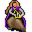

Fiamma¶Where to find Fiamma: Brightport: Brightport weapon
{ .sprite }
| Type | NPC (can be spoken to; cannot be attacked) |
| Role | Shopkeeper; starts Too hot to handle |
| Found in | Brightport |
| Entry ID | brightportsmith |
| Introduced | v0.8.16.1 |
Shop stock¶
| Item | Chance | Qty |
|---|---|---|
| Fine steel broadsword | 100% | 1 |
| Two-handed iron claymore | 100% | 1 |
| Defender's claymore | 100% | 1 |
| Massive two-handed sword | 100% | 1 |
| Iron halberd | 100% | 1 |
Quests¶
- Too hot to handle: stages 5, 10, 15, 20, 25, 30, 35, 40, 45, 50
- Brightport story flags (hidden flag): stage 87
Dialogue simulator¶
Set your quest stages and items, then talk to Fiamma. Same rules as the game: same checks, same options, same effects.
Rules verified against v0.8.18 game code (ConversationController.java) and dialogue data.
Dialogue (28 lines)
Exactly as in the game files. Each line appears once; links jump to where a choice leads.
brightport_fiamma_selector2 (silent check: the first matching branch below is taken)
- Next (if 6 rounds passed since timer “fiamma_forge”; NOT reached stage 50 of Too hot to handle) → brightport_fiamma14
- Next (if NOT 6 rounds passed since timer “fiamma_forge”; reached stage 35 of Too hot to handle) → brightport_fiamma15
- Next (if reached stage 25 of Too hot to handle; reached stage 30 of Too hot to handle; NOT reached stage 35 of Too hot to handle) → brightport_fiamma11
- Next → brightport_smith
brightport_fiamma14 Fiamma: “It's done! but... There is a slight problem.”
- Next → brightport_fiamma16
brightport_fiamma15 Fiamma: “The sword is not done yet. Have you no patience?”
brightport_fiamma11 Fiamma: “With all these quality materials, I can forge you something magnificent enough to equal the legends. Come back to me later!” — effects: sets stage 35 of Too hot to handle, starts timer “fiamma_forge”
brightport_smith Fiamma: “Greetings, my name is Fiamma. I forge my swords as finely as I bake my bread.”
- “Could you show me what you have to sell?” → brightport_fiamma_selector
- “That makes it sound like you're not a very good baker either.” (if reached stage 87 of Brightport story flags (hidden flag); NOT reached stage 20 of Too hot to handle) → brightport_fiamma0
- “I have the cold lava rocks and arulir skin.” (if hand over 15× Cold Lava Rock; hand over 1× Arulir skin; NOT reached stage 25 of Too hot to handle; reached stage 15 of Too hot to handle; reached stage 20 of Too hot to handle) → brightport_fiamma9
- “I have the cold lava rocks.” (if carry 15× Cold Lava Rock; reached stage 15 of Too hot to handle; NOT reached stage 25 of Too hot to handle; NOT carry 1× Arulir skin) → brightport_fiamma_rocks
- “I have the red crystal here.” (if hand over 1× Red Crystals; NOT reached stage 30 of Too hot to handle; reached stage 20 of Too hot to handle) → brightport_fiamma10
brightport_fiamma16 Fiamma: “I've quenched it, but when I try to pull it out of the water, it reacts to the air and starts heating up. It quickly becomes unbearable to hold.”
- Next → brightport_fiamma17
brightport_fiamma_selector (silent check: the first matching branch below is taken) — effects: sets stage 87 of Brightport story flags (hidden flag)
- branch 1 → shop opens
brightport_fiamma0 Fiamma: “Hey kid, you might be right about the swords, but don't ever insult my baking skills!”
- Next → brightport_fiamma1
brightport_fiamma9 Fiamma: “Yes, those look good. Thanks!” — effects: sets stage 25 of Too hot to handle
- Next → brightport_fiamma_selector1
brightport_fiamma_rocks Fiamma: “That's good, $playername. But I still need a strip of arulir skin to go along with them.”
brightport_fiamma10 Fiamma: “Wow. It looks magnificent!” — effects: sets stage 30 of Too hot to handle
- Next → brightport_fiamma_selector1
brightport_fiamma17 Fiamma: “I was hoping to keep the Arulir skin for a pair of forging gloves, but I ended up making these smaller, heat-resistant gloves, to wield this magnificent two-handed sword I crafted from the materials you brought me.” — effects: sets stage 40 of Too hot to handle
- “Two-handed sword? I thought you would make me a regular sword.” → brightport_fiamma18
- “Sounds nice, I'll take it.” → brightport_fiamma20
brightport_fiamma1 Fiamma: “Unfortunately, it's not about my skill but the quality of the steel. If I had the materials, I could forge good swords all day.”
- “If I brought you materials, could you forge me something with them?” → brightport_fiamma
- “What's wrong with the steel?” → brightport_fiamma2
brightport_fiamma_selector1 (silent check: the first matching branch below is taken)
- Next (if reached stage 30 of Too hot to handle; reached stage 25 of Too hot to handle) → brightport_fiamma11
- Next (if reached stage 30 of Too hot to handle; NOT reached stage 25 of Too hot to handle) → brightport_fiamma12
- Next (if NOT reached stage 30 of Too hot to handle; reached stage 25 of Too hot to handle) → brightport_fiamma13
brightport_fiamma18 Fiamma: “Hey, you didn't specify, so I made what I know best.”
- “Could you forge me something else with the same materials then?” → brightport_fiamma19
brightport_fiamma20 Fiamma: “Well, usually I would have my reservations about giving someone as young as you something this dangerous. But you're the one who fought those dangerous creatures, so my worries are unfounded. Take it, and use it well.” — effects: sets stage 50 of Too hot to handle, gives 1× Flaming greatsword, gives 1× Salamander gloves
- “Thanks, I will!” → conversation ends
- “[I'll probably keep it as a trophy]” → conversation ends
brightport_fiamma Fiamma: “I would gladly forge you something, but it would require much effort on your part. If that's alright with you.”
- “There is no task beyond my skill.” → brightport_fiamma3
- “Ha! You're speaking with a seasoned adventurer, I can do it!” → brightport_fiamma3
brightport_fiamma2 Fiamma: “All the metal we're getting now is lower quality scraps. Feygard has been deliberately interfering with the trade, creating a shortage so that blacksmiths in towns like Vilegard and ours, which were affiliated with Nor City, can't forge…”
- “What would you say if I brought you some quality materials?” → brightport_fiamma
brightport_fiamma12 Fiamma: “What a clear crystal! But I still need the lava rocks for fuel, and the arulir skin. Bring them to me and I can start.”
brightport_fiamma13 Fiamma: “Remember, I still need that red crystal to forge the blade. Bring it to me, and I can start.”
brightport_fiamma19 Fiamma: “Frankly, I don't feel like forging another sword for you, but I can give you something else instead, and keep the sword for myself if you don't like it.”
- “Yes, I would prefer that.” → brightport_fiamma21
- “Sorry, I'll keep the sword instead.” → brightport_fiamma20
brightport_fiamma3 Fiamma: “OK. First, we have to discuss the materials I have in mind. I presume you have heard of the town of Remgard?” — effects: sets stage 5 of Too hot to handle
- “Yes I have heard of it.” → brightport_fiamma5
- “No, I have not.” → brightport_fiamma4
brightport_fiamma21 Fiamma: “Take this glaive, it was given to me by my old master from Nor City. It was originally forged for nobility but after lord Emeric's defeat in the noble wars. The Imeria branch of house Houdart fell from grace, and this was sold for cheap…” — effects: sets stage 45 of Too hot to handle, gives 1× Glaive of Imeria, sets stage 50 of Too hot to handle
- “That's really cool. Thanks!” → conversation ends
- “[I don't use pole weapons either...]” → conversation ends
brightport_fiamma5 Fiamma: “Many travelers pass through Brightport on their way to and back from Remgard. The town lies high in the mountains, and from those travelers I heard of beasts called arulirs, harassing travelers along a short stretch of the road.” — effects: sets stage 10 of Too hot to handle
- Next → brightport_fiamma6
brightport_fiamma4 Fiamma: “If so, then listen closely, as you are about to hear of it.”
- Next → brightport_fiamma5
brightport_fiamma6 Fiamma: “But what's most interesting is their origin. The area they now inhabit was a mining camp, which was abandoned after the caves became unstable. Out of the depths, gornauds clawed a tunnel, releasing arulirs from the fiery depths they…”
- Next → brightport_fiamma7
brightport_fiamma7 Fiamma: “First, if you can travel there, I want a strip of the arulir's skin - rumored to be tougher than steel but as flexible as leather. Second, I want 15 cooled down lava rocks from inside the mountain cave. These will fuel my forge better…” — effects: sets stage 15 of Too hot to handle
- Next → brightport_fiamma8
brightport_fiamma8 Fiamma: “And lastly, the material from which I will forge a blade, a red crystal from a gornaud. This material, which their teeth and claws are made of, can easily crush rock. Only in rare cases, the mineral gathers and forms crystal clusters on…” — effects: sets stage 20 of Too hot to handle
- “I'm on my way.” → conversation ends
- “I'll get there eventually.” → conversation ends
Version history¶
| Version | Change |
|---|---|
| v0.8.16.1 | Added Dialogue: 28 lines added |
Verified against v0.8.18 and every earlier release back to v0.7.0 (game data compared release by release).
Technical information
| Entry ID | brightportsmith |
| Spawn group | brightportsmith |
| Loot table | fiamma_shop |
| Conversation | brightport_fiamma_selector2 |
| Faction | – |
| Movement | – |
| Icon | monsters_ld1:219 |
| Defined in | res/raw/monsterlist_brightport.json |
Raw data:
{
"id": "brightportsmith",
"name": "Fiamma",
"iconID": "monsters_ld1:219",
"phraseID": "brightport_fiamma_selector2",
"droplistID": "fiamma_shop"
}
Community notes¶
Written by players, not generated from game data. Observations: what players notice in-game · Lore: the in-world story · Trivia: real-world facts, references, development history · Theory / speculation: unconfirmed ideas; may just be unfinished content
Observations¶
No notes yet. Contributions are welcome: add a note.
Lore¶
No notes yet. Contributions are welcome: add a note.
Trivia¶
No notes yet. Contributions are welcome: add a note.
Theory / speculation¶
No notes yet. Contributions are welcome: add a note.
Data from v0.8.18